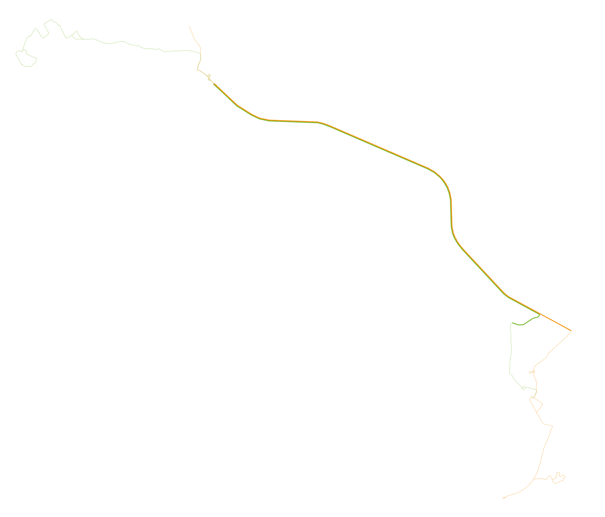
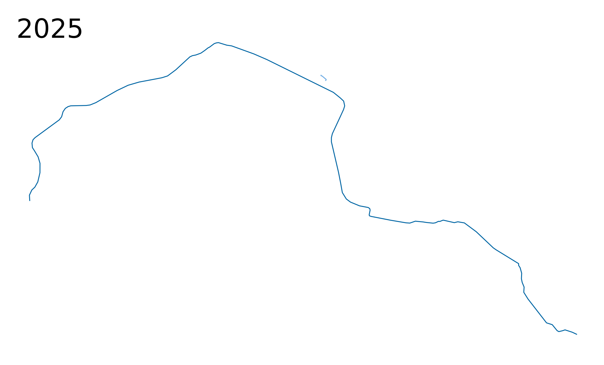
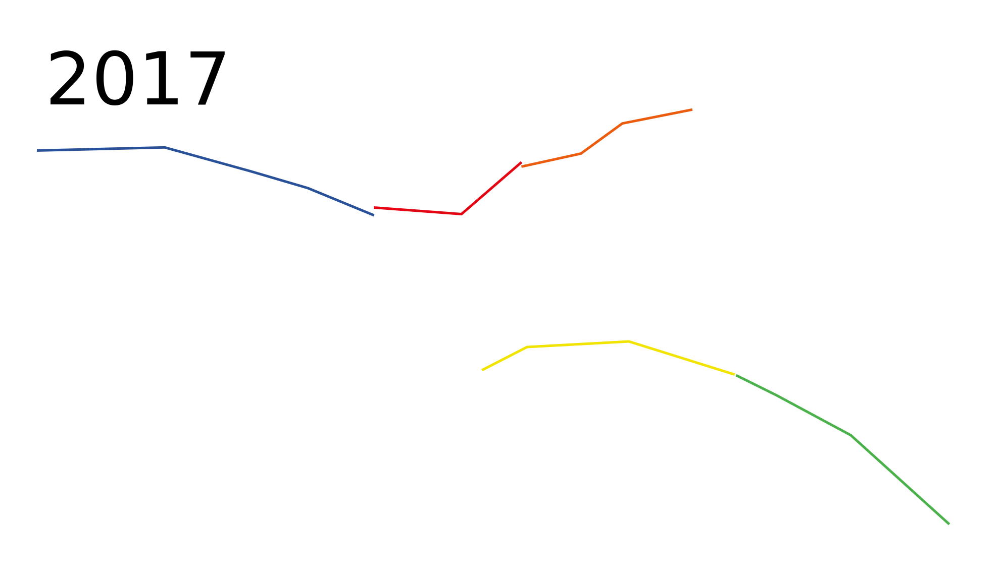

One-off Rapid Transit Maps for Scale Comparison with Timelines
Cambridge(modulo crossing priority)
(modulo crossing priority)" alt="Cambridge
(modulo crossing priority) map" width="250px" height="225px"> Disneyworld
(modulo stop spacing)
") Honolulu 2025
Honolulu 2025 Indianapolis
 La Paz
La Paz Louisville 1895
 Morgantown
Morgantown(not year round)
") Rochester 1930
Rochester 1930 Seattle 2025
Seattle 2025Sioux City 1895

Based on frequent midday service at the end of the year in question (notes). Scale 10 CSS pixels per km.
Please send any corrections or questions to threestationsquare at gmail dot com.
See also: rapid transit timelines - miscellaneous timelines and maps